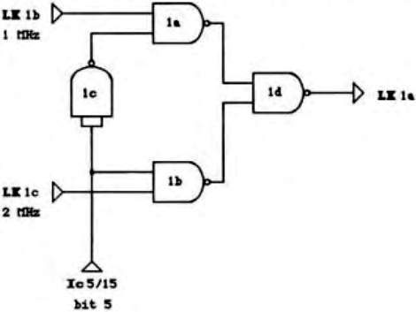

Scorpio News |
April–June 1987 – Volume 1. Issue 2. |
| Page 46 of 51 |
|---|
This article describes a simple hardware modification for the Gemini GM809 floppy disk controller board to allow full speed stepping of modern 5 1/4″ drives.
About two years ago I upgraded my Nascom 2 by replacing the exciting drives with a couple of TEAC FD-55s. They provided my system with a very worthwhile boost in performance and disk capacity (from 80K to 800K). Unfortunately they sound like a couple of machine guns every time the disk heads moved. Altering the stepping rate from 20 to 6 mSec (still twice the minimum for the TEACs) reduced the noise to a slightly less objectionable burrrr.
At about this time, I learned that the never GM829 FDC board could support the faster 3 mSec stepping rate of modern floppy disk drives by doubling the clock frequency into the FDC controller chip. The GM829 board controls the FDC clock frequency, amongst other things, by using the upper most bit (bit 5) of a six bit resetting latch. Examining the GM809 circuit diagram revealed that this same bit is present and uncommitted on the board. LK 1 on the GM809 provides a selection of 3 clock frequencies, one of which is selected by a soldered link. Thus all that is needed is to add a simple (digital) 2 way switch in place of the soldered link.
The simple circuit in figure 1 can switch through one of 2 clocks under control of a single input lines. The two clock frequencies (1 & 2 MHz) are each connected to one input of a pair of NAND gates which are functioning as digital switches. The other input to the gates are connected to the clock select line. Logic 0 (low) on the clock select line opens the switch and logic 1 (high) will close the switch. Letting the clock pulses through to the output of the relevant NAND gate. An inverter on the select line (made from another NAND gate) ensures that only one switch is open and the other closed at all times. A fourth NAND gate combines the outputs from the two digital switches into a single output representing the software selected clock frequency. After a reset all six bits of the latch (IC5) are set to logic 0 (low). By suitably arranging the two clocks, the standard 1MHz clock is selected on reset. This provision should leave all well behaved disk routines unaffected by the modification.
| Page 46 of 51 |
|---|